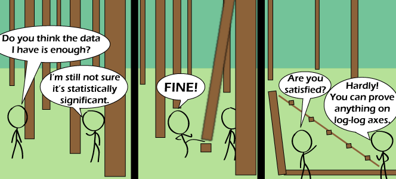

Comic JK 672
When I Feel Like It
⇤
<
?
>
⇥

⇤
<
?
>
⇥
Forum
.
RSS
.
Digg
.
Facebook
.
Reddit
.
Twitter
.
Stumbleupon
>>>>>>>>>>>>anyone who is a regular reader increment count by one ... $i=1; $i++; Enter your thoughts on number 672 here. Please, spam, troll, or log. log(this comic) = ?? and in the fourth panel, the two characters are attacked and eaten by small bears... > Actually, large bears. >>small bears... running from the mountains of metal falling from the sky... WOOOOOOOOOOOOOO! Stickman Norris. Chuck's lesser known understudy > (like) > lesser-known no longer. Someone who can kick like that doesn't need to provide data. - Is that his foot he's using to cut down the tree? Are we sure? > You think it's someone else's foot? >> ^LOL > Those aren't trees, those are well-balanced logs. >You clearly don't play enough Minecraft; A game in which you punch down trees. Makes perfect sense to me. >>Silly, trees don't fall in minecraft. >>>If a tree falls in minecraft, does it cause a debug? >>>>if a tree falls toward Voy, is that... erm... integral to the plot... ? You can't prove everything on log-log axes. > log(your mom) vs log(fat) >> It's big, it's heavy, it's your mom. >>> It's better than bad, it's good. >>>> Also, big, heavy, and wood. >>>>>it wood what ? >>>>>>I woodn't continue on this track... >>>>>>>you woodn't ...but Edward Woodwood... >>>>>>>>Woodwood wood what? >>>>>>>>>precisely my point... O_O I was expecting a "can't see the forest for the trees" type joke. This one was somehow even worse. I still laughed. Okay, the pun is terrible. Doesn't stop me loving it.